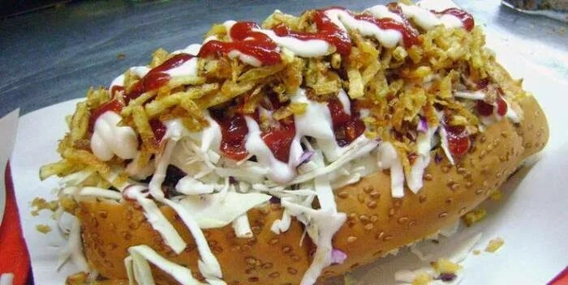

Perros Calientes Venezolanos

Receta Perros Calientes al estilo Venezolano
Ingredientes
- 8 panes para Perros Calientes
- 8 salchichas clásicas tipo wienners
- 2 tazas de repollo blanco cortado finamente a lo largo
- ½ taza de zanahoria rallada (opcional)
- ½ cebolla cortada en cuadritos
- Papitas ralladas crujientes (se consiguen ya listas en los supermercados)
- Queso blanco añejo finamente molido
- Salsa rosada (mezclar 6 cucharadas de salsa de tomate/ ketchup con 6 cucharadas de mayonesa y 3 gotas de salsa ingresa)
- Mostaza
- Salsa de ajo
- Salsa de tomate/ ketchup (opcional)
Pasos
- Cocinar las salchichas en agua hirviendo por unos 5 minutos.
- Calentar los panes por unos 3 minutos en el horno.
- Una vez listo meter en los panes las salchichas,
- Agregar al gusto repollo rallado, zanahoria, papitas, las salsas y el queso rallado.
- Disfrutar y repetir, buen provecho